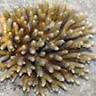
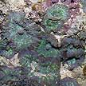
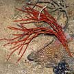
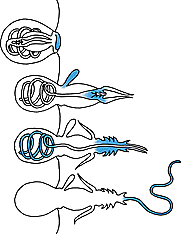
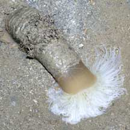
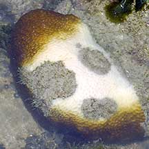
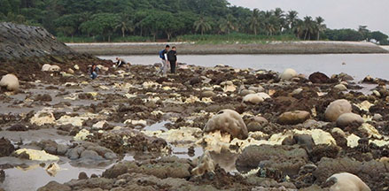
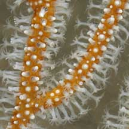
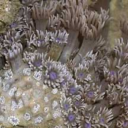
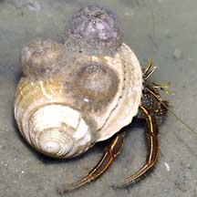

|
|
| hard corals text index | photo index other cnidarians text index | photo index |
| Phylum Cnidaria |
| Phylum
Cnidaria updated Nov 2019
Where seen? Cnidarians are commonly encountered on our shores. Many cnidarians are often confused for plants or non-living things. Some are so bizarre, we don't immediately link them with their more familiar relatives. What are cnidarians? Cnidarians belong to the Phylum Cnidaria that includes the more familiar sea anemones, hard corals and jellyfishes. There are about 10,000 known species of cnidarians. The Phylum Cnidaria is divided into four main Classes. Class Scyphozoa
Class Cubozoa
Class Hydrozoa
Class Anthozoa
|
 Hard coral |
 Soft coral |
 Peacock anemone |
 Sea anemone |
 Jellyfishes |
 Sea pens |
 Colonial anemones |
 Corallimorphs |
 Hydroids |
 Sea fans |
| Features: Pronounced "ni-dare-ee-ya'
(the 'c' is silent), 'Cnidaria' means 'stinging thread' in Greek.
Indeed, one of the defining characteristic of cnidarians are their
stingers (more about these below). Same all around: All cnidarians have radial symmetry. That is if a cnidarian was sliced up like a round birthday cake, all slices would look the same! This means there is no distinct front or rear end of a cnidarian. There is, however, a distinct upper and lower surface. Usually these surfaces are identified as oral (the surface with the mouth) and aboral (the opposite side). Nerves but no brains! Cnidarians have cells arranged in tissues. Most have nerve cells and muscles, but lack organs such as brains, hearts, circulatory or excretory systems. Lacking specialised respiratory organs, gases simply pass through their bodies. Cnidarians are not anal: Cnidarians have simple digestive systems comprising basically of a sac with one opening. All cnidaria do not have an anus! Indigestible bits go out the same way they first came in, through the 'mouth'. Most cnidarians have some sort of tentacles surrounding this opening. This situation means cnidarians must digest a meal and spit out the indigestible bits before eating again. This opening is also where cnidarians expel eggs and sperm. |
 Sequence of firing stinging cell |
 The cerianthid has special stingers used to create its tube. Pulau Hantu, Apr 06 |
 Stinging hydroids inflict very painful stings on humans. Tuas, Apr 05 |
| Stingers! All cnidarians have
some sort of stinger. These are used to gather food, paralyse prey
and defend against predators and rivals. The stinger comprises a capsule with a long thread often barbed at the base. The thread lies coiled in the hollow capsule (called a cnida) closed with a tiny cap, and a trigger, ready to fire (the entire structure is called a cnidocyte). When stimulated by touch, chemical signals or triggered by the nerves of the animal, the pressure within the capsule is instantly raised. This blows out the cap and the thread everts and uncoils explosively. For more about these stingers and a video of a firing stinger, see the Tropical Australian Stinger Research Unit website. This explosion is belived to be one of the fastest cellular actions in nature, and the force as powerful as a bullet. Once the prey is stung, the tentacles then wrap around the subdued or immobilised prey and bring it to the mouth. Once fired, the stinger is not re-used. New stingers replace used ones. Although tiny, these stingers are effective because a cnidarian can have thousands of such stingers. Stingers are found all over the body of a cnidarian, but the tentacles usually have a greater concentration of stingers. Besides being used to collect food, stingers are also used to ward off other encrusting animals nearby. On study observed sea anemones waging fierce war over territory. |
 A carpet anemone swallowing a dead fish. Chek Jawa, Mar 02 |
 A tiger sea anemone attempting to swallow a sea pen! Changi, Jul 04 |
| There are three types of cnidae. Harpoon-like stingers that penetrate
the victim and inject toxins are called nematocysts. First, the barbed
portion penetrates the victim. Some are so powerfully released that
this portion can pierce the shells of crustaceans. The thread then
uncoils explosively inside the victim. The thread is hollow and toxins
are pumped through it. Most toxins only affect small creatures like
plankton, shrimp and fish. Some cnidarians, however, have toxins powerful
enough to cause extreme pain in or even kill people. Another kind of cnida called spirocysts merely produce sticky threads that adhere to surfaces or barbed threads, or long threads which entangle around small things. These may help collect small food particles or trap hard-bodied prey like crabs. The third kind called ptychocyts are found only cerianthids and fire off into sticky threads that mat together to form the felt-like tube of these animals. There are more than 30 types of cnidarian stingers! Stingers are one of the features used to identify cnidarian species. What do they eat? Almost all cnidarians are carnivorous. Many eat small creatures or trap detritus, plankton and other microscopic titbits. But many also capture and eat large prey. They may use mucus to trap small particles, or their stinging tentacles to capture bigger prey. Many cnidarians, however, supplement their meals. Many harbour microscopic, single-celled symbiotic algae (zooxanthellae) within their bodies. The algae undergo photosynthesis to produce food from sunlight. The food produced is shared with the host, which in return provides the algae with shelter and minerals. The zooxanthellae are believed to contribute to the colour of cnidarians. Thus when a hard coral colony loses its zooxanthellae, it turns white: a phenomenon called coral bleaching. |
 Coral bleaching: When hard coral lose their zooxanthellae, they turn white. Sisters Island, Nov 05 |
 |
| What eats them? Despite their
stingers, many animals happily munch on cnidarians. Sea turtles eat
jellyfish, and often mistake floating plastic bags for jellyfish.
This can eventually kill the sea turtle. Nudibranchs prey on anemones, corals and sea pens, each nudibranch usually specialising
on a particular prey. Some snails and fishes specialise in eating
corals. The Crown-of-Thorn sea star (Acanthaster planci) is
a well-known predator of hard corals and a population explosion of
these sea stars can decimate a reef. Fortunately, these sea stars
have not been encountered on our shores. All for One and One for All: Many cnidarians are colonial, that is, many individual animals live together as one animal. Corals are made up of countless tiny polyps that are connected to another with living tissue that coats the hard skeleton. In soft corals, the polyps are embedded in a thick common tissue instead of a hard skeleton. In sea pens, several kinds of polyps are interconnected, each having a different shape and function. Skeleton of Water: All cnidarians have a hydrostatic skeleton. That is, fluids maintain the shape of their bodies, much like air in a balloon. Muscles push against this fluid-filled body to change the body shape; just like the way a balloon half-filled with air can be re-shaped by pushing squeezing the balloon to move the air around. This is how jellyfish pulse their umbrella-shaped bodies to swim, how anemones extend and move their tentacles, and how stingers are fired off. Some cnidarians, however, also produce a hard skeleton that also provide protection. Hard corals, for example, have an external skeleton while gorgonians have an internal skeleton. |
 Colonial polyps of a sea pen emerge from a fluid-filled body. Changi, Jun 05 |
 Colonial polyps of a sea fan emerging from a hard skeleton. Beting Bronok, May 03 |
 Pore corals have tiny polyps emerging from a hard skeleton. Sisters Island, Jan 06 |
| Medusa and Polyp: Cnidarians come
in one of two typical forms. Some go through both forms in their lifecycle,
others stay in one shape all their lives. One form is the medusa. This is the typical jellyfish shape familiar to many of us: an umbrella-shaped body with the mouth facing downwards and surrounded by tentacles. This form is usually free-swimming, moving by contracting the umbrella-shaped body to expell water and move off in the opposite direction. Another form is the polyp. This is the flower-like shape that we are familiar with in sea anemones. In this body form, the animal generally has a mouth facing upwards and surrounded by tentacles. The other end is usually fixed onto something or buried into the ground, so this form is usually immobile. More about polyps of the Anthozoans (Class Anthozoa), which do not undergo a medusa phase in their life cycle. |
 The medusa is the typical jellyfish shape. Tuas Jun 05 |
 A sea anemone is a solitary polyp. Sentosa, Apr 04 |
 Most hard corals are a colony of many polyps. Labrador, Jul 05 |
| Cnidarian Babies: Cnidarians
typically practice external fertilisation with eggs and sperm released
simultaneously into the water. In some, the genders are separate,
while others may be hermaphrodites. Most cnidarians undergo metamorphosis
and their larvae look nothing like their adults. The form that first
hatches from the fertilised egg is the planula larva: a free-swimming
oval blob covered with cilia (tiny hairs) that is typical of cnidarians.
These drift with the plankton. In some small jellyfish, these larvae
eventually settle down and develop into polyps that feed and grow.
These polyps may reproduce asexually by budding off more polyps. Eventually,
the polyp may reproduce asexually by budding off medusa forms. These
medusa swim off and develop into adults that may eventually reproduce
sexually. The original polyp may remain alive to produce medusa forms
again later on. There are many variations of this development. Some large jellyfish don't have a polyp stage. Sea anemones and corals don't develop the medusa stage. Role in the habitat: Among the most significant cnidarians are hard corals, which are important reef builders. Coral reefs thrive in clear nutrient-poor tropical waters. Hard corals can grow here because of their symbiotic relationship with zooxanthellae, single-celled algae that photosynthesise and share the nutrients produced with the host coral. Thus corals are like the trees of the rainforest, providing homes for small animals and are a haven and nursery for ocean-going creatures. Reefs also protect the shoreline from strong waves, storms and erosion. Neighbourly cnidarians: Many creatures have adapted to deal with the stingers of cnidarians. Anemonefish, anemoneshrimps and crabs live in safety among their deadly tentacles. Some nudibranchs not only eat the stingers, but are also able to transfer these, unsprung, to the ends of their own 'tentacles', ready to protect the nudibranch from disturbers. Hermit crabs and snails may also have anemones on their shells as additional protection against disturbers. Many cnidaria also have a symbiotic relationship with zooxanthellae (see above section on cnidarian food). |
 The False clown anemonefish can live happily in the carpet anemone that would eat any other fish. Kusu Island, Jun 04 |
 Peacock-tail anemone shrimps are often found carpet anemones. Kusu Island, Jul 04 |
 Hermit crab with three large sea anemones (retracted) on its shell. Changi, Jul 04 |
| Human uses: All kinds of corals
hard and soft, sea anemones and other cnidaria are extensively harvested
from the wild for the live aquarium trade. Hard coral are also mined
as building materials in some coastal areas. Living coral reefs, however, are worth far more to humans when they left alone. Reefs bring in tourists which generate business beyond the shore (e.g., hotels, restaurants and travel-related industries). Reefs are also homes to a bewildering variety of creatures, some of which protect themselves with toxins or other chemicals that may have pharmaceutical applications. Their toxins and other features of cnidarians are increasingly being studied for medical and other applications. A sea anemone toxin is being studied for treating multiple sclerosis, while the Nobel Prize was awarded to the scientists who developed a flourescent protein from a jellyfish for biomedical use. Status and threats: Many cnidarians are listed among the threatened animals of Singapore. Globally, coral reefs are seriously threatened by overcollection, habitat destruction, pollution as well as global climate changes. Coral bleaching may also threaten reefs. Harvesting of marine wildlife such as corals may involve the use of cyanide or blasting, which damage the habitat and kill many other creatures. Like other creatures harvested for the live aquarium trade, most die before they can reach the retailers. Without professional care, most die soon after they are sold. Those that do survive are unlikely to breed successfully. Like other creatures of our shores, cnidarians are affected by human activities such as reclamation and pollution. Trampling by careless visitors, and poaching by hobbyists also have an impact on local populations. |
| Cnidarians
on Singapore shores hard corals: text index and photo index of hard corals on this site other cnidarians: text index and photo index of other cnidarians on this site |
| Threatened
cnidarians of Singapore from Davison, G.W. H. and P. K. L. Ng and Ho Hua Chew, 2008. The Singapore Red Data Book: Threatened plants and animals of Singapore. Order Sclerectinia (hard corals)
Order Gorgonacea (sea fans)
|
|
Links
References
|